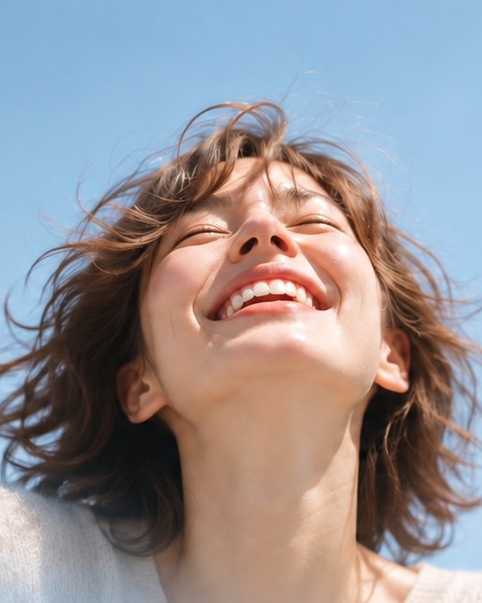
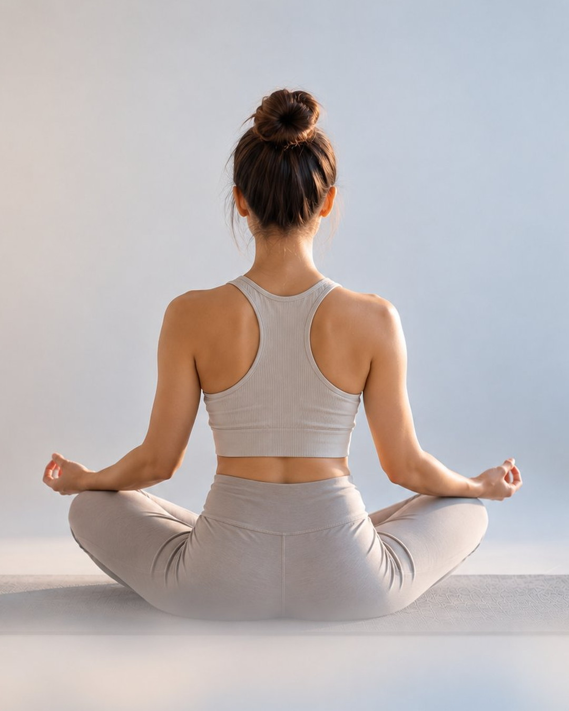
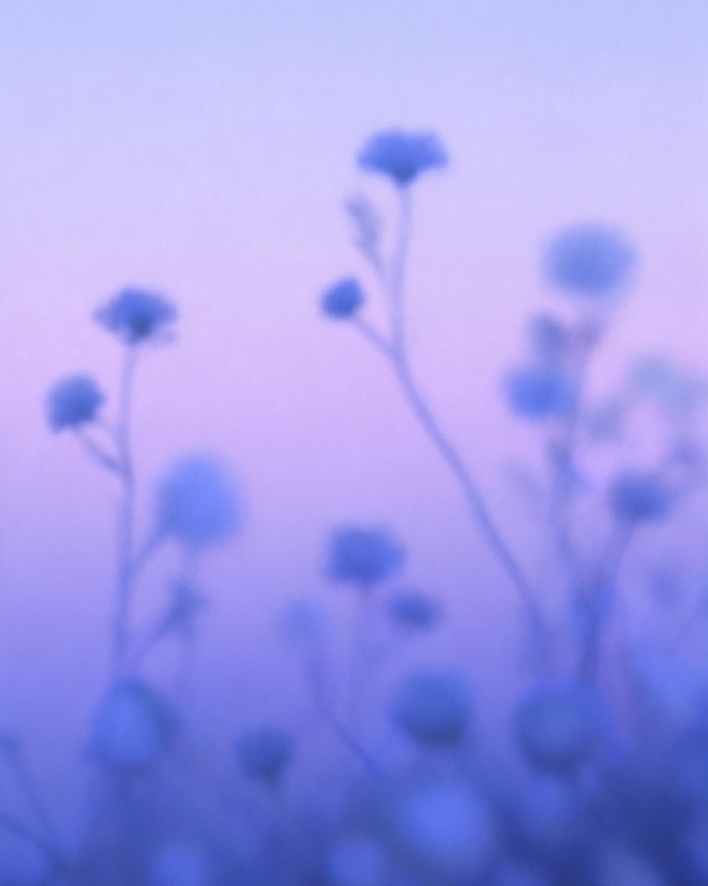
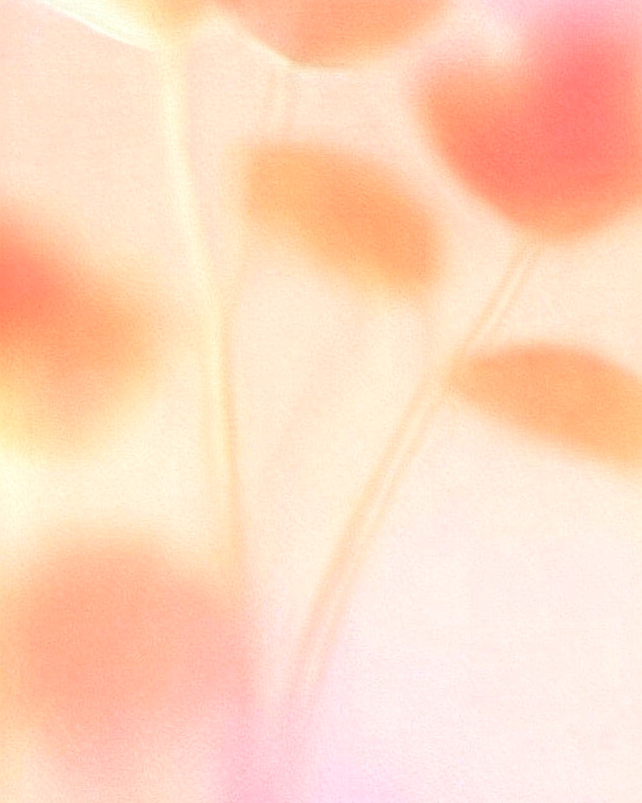

TOOLS
今日
82
准备度
睡眠82
恢复71
活动58

情绪调节
今日情绪波动 3 次 · 4 段冥想
›

提升颜值
昨晚睡眠 82 · 周期建议
›

营养搭配
三餐已记 2 次 · 6 份食谱
›

运动建议
今日步数 6,240 · 按周期推荐
›

稳定睡眠
3 段助眠音 · 睡眠回顾
›

知识科普
12 篇 · 每周更新
›
DOura 极简数据风
暖白底 + 一行 数据摘要（准备度环 + 睡眠/恢复/活动三条 hairline 指标），下面 6 行工具列表：42px 小缩略图 + 名称 + 一行真实状态数据，hairline 分隔、右侧 › 。无 tab 无横滑，全部一屏直达。
+ 信息密度高、数据感强、和 Mira 的「身体数据」定位最贴；实现最简单
− 图片沦为 42px 小图，失去工具卡视觉冲击力
GOOD EVENING
今晚想放松什么？
SLEEP
稳定睡眠
3 段助眠音
EMOTION · 黄体期第 24 天
情绪调节
今日情绪波动 3 次，缓一缓，把紧绷的情绪松下来。
GLOW
提升颜值
跟着周期养气色
ECalm 午夜蓝 · serif 大场景卡
深夜蓝渐变底 + serif 大标题「今晚想放松什么？」+ 问候语按时间变（早上好/下午好/晚上好）。中央横滑大场景卡（246px 宽，图 + 底部深色渐变 + serif 工具名 + 一句状态文案），页码点白色低透明度。无 tab，滑动即浏览。
+ 情绪价值最高，和「冥想/呼吸」的工具属性最契合；serif 差异化明显
− 深色底与 App 其他浅色页反差大，需要做深色模式配套
晚上好 · 黄体期第 24 天
今晚的工具
情绪调节
情绪波动 3 次
稳定睡眠
昨晚睡眠 82
营养搭配
三餐已记 2 次
运动建议
步数 6,240
提升颜值
卵泡期 · 第 9 天
知识科普
12 篇 · 每周更新
6 个工具 · 按你的周期排序
F深墨夜色 · 高对比网格
近黑底（#101013）+ 2×3 场景小卡（176px 高、圆角 16、图 + 底部深渐变 + 白字两行）。深色让风景图的色彩更跳，白字对比度拉满；「按周期排序」的小字给网格一个推荐逻辑。
+ 夜景氛围感强，适合睡前场景；网格一屏看全
− 与浅色 App 主体的衔接需要过渡（如仅冥想/夜间入口用深色）